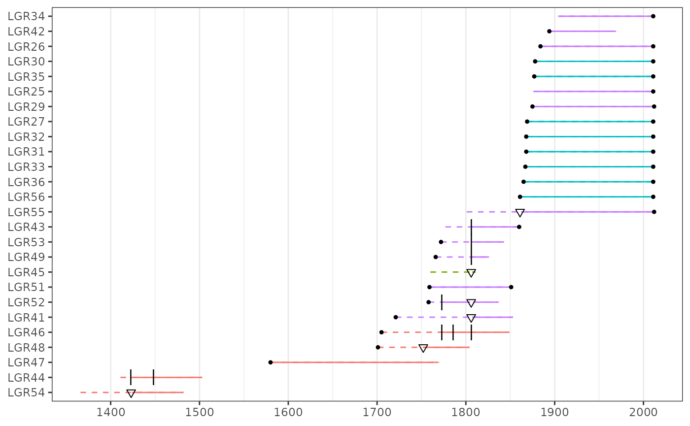

Introduction to burnr
S. Brewster Malevich
2021-03-11
Source:vignettes/introduction.Rmd
introduction.RmdThis is a brief tutorial to cover some general ideas and basic features in burnr. This is a simple tutorial so you won’t need crazy coding skills. I am going to assume that you have a recent version of R installed and are familiar with the basics of R.
If you are not familiar with R, hit Google with the search “R stat tutorial”, or some variation there of. You will find a plethora of useful learning material and helpful people from a wide array of backgrounds.
People pickup this coding stuff more quickly if they try the examples I give and play around with the interesting things they discover. I recommend you open a terminal with an R session and follow along as you read this. It’s more fun that way.
What’s burnr?
burnr is a package for forest fire history analysis in the R statistical environment. This package isn’t designed to be a comprehensive suite for fire analysis. Rather the idea is to provide a transparent, flexible, and powerful set of core tools.
Citing burnr in your research
Please cite our peer-reviewed paper introducing burnr. The preferred citation is:
Malevich, Steven B., Christopher H. Guiterman, and Ellis Q. Margolis. 2018. “Burnr: Fire History Analysis and Graphics in R.” Dendrochronologia 49 (June): 9–15. https://doi.org/10.1016/j.dendro.2018.02.005.
You can see also this information by running citation('burnr') in an R session.
Install burnr
You can install burnr from the CRAN repository with:
install.packages('burnr')Most burnr development is centered at https://github.com/ltrr-arizona-edu/burnr. If I get hit by a bus, the people at the Laboratory of Tree-Ring Research will hopefully make sure that burnr doesn’t disappear. You can download burnr directly from this github repository with the devtools package:
devtools::install_github('ltrr-arizona-edu/burnr')Note that this will give you the bleeding-edge, development version of the package. It changes often and it may be unstable. Beware.
Once burnr has been installed, you can load it just as you’d load any other R package
and you’re good to go.
Reading and writing fire history data
Loading data from FHX files is fairly straightforward.
d <- read_fhx('my_fhx_file.fhx')This loads any given FHX file into an fhx object in R and assigns it to the d variable.
We can also write simple FHX files from fhx objects in R:
write_fhx(d, fname = 'notacreativeoutputfilename.fhx')Fairly straightforward stuff.
Manipulating fhx objects
The fhx objects are like very specialized data.frames. We can do some useful things with these fhx objects. Let’s use some example fhx objects that we bundled with burnr (or you can read in your own FHX files).
## year series rec_type
## 1 1366 LGR54 inner_year
## 2 1423 LGR54 unknown_fi
## 3 1424 LGR54 recorder_year
## 4 1425 LGR54 recorder_year
## 5 1426 LGR54 recorder_year
## 6 1427 LGR54 recorder_yearPeaking at the head of the lgr2 data shows that we have information about the years of observations, the series (which can correspond to a tree, sample, plot, site, whatever you like), and the type of record for a given year. You’ll notice that we don’t keep track of “null” years. Removing null years lets us keep the code quick and nimble (usually).
Looking at the structure of the lgr2 object can give us some more technical details, if that’s your thing:
str(lgr2)## Classes 'fhx' and 'data.frame': 2681 obs. of 3 variables:
## $ year : int 1366 1423 1424 1425 1426 1427 1428 1429 1430 1431 ...
## $ series : Factor w/ 26 levels "LGR54","LGR44",..: 1 1 1 1 1 1 1 1 1 1 ...
## $ rec_type: Factor w/ 19 levels "null_year","recorder_year",..: 17 4 2 2 2 2 2 2 2 2 ...The important thing to keep in mind is you can parse these fhx objects all you like, but be careful modifying or changing an fhx object’s data with your own functions as this might have unintended consequences. Manually modifying the data is something I recommend for advanced (or brave) users with a working knowledge of R’s S3 classes and generic function.
Let’s pull in another example dataset and combine it with lgr2.
data(pgm) # Peggy Mesa fire data.
both <- lgr2 + pgmAs you might suspect, both is a concatenation, combing the fire information in lgr2 and pgm. We can prove this by looking at the series names.
series_names(lgr2)## [1] "LGR54" "LGR44" "LGR47" "LGR48" "LGR46" "LGR41" "LGR52" "LGR51" "LGR45"
## [10] "LGR49" "LGR53" "LGR43" "LGR55" "LGR56" "LGR36" "LGR33" "LGR31" "LGR32"
## [19] "LGR27" "LGR29" "LGR25" "LGR35" "LGR30" "LGR26" "LGR42" "LGR34"
series_names(both)## [1] "LGR54" "LGR44" "LGR47" "LGR48" "LGR46" "LGR41" "LGR52" "LGR51" "LGR45"
## [10] "LGR49" "LGR53" "LGR43" "LGR55" "LGR56" "LGR36" "LGR33" "LGR31" "LGR32"
## [19] "LGR27" "LGR29" "LGR25" "LGR35" "LGR30" "LGR26" "LGR42" "LGR34" "PGM45"
## [28] "PGM44" "PGM43" "PGM42" "PGM38" "PGM37" "PGM34" "PGM33" "PGM30" "PGM29"
## [37] "PGM28" "PGM27" "PGM22" "PGM21" "PGM20" "PGM19" "PGM18" "PGM16" "PGM14"
## [46] "PGM13" "PGM2" "PGM15" "PGM5" "PGM40" "PGM36" "PGM3" "PGM17" "PGM11"
## [55] "PGM7" "PGM23" "PGM25" "PGM10" "PGM6" "PGM1" "PGM26" "PGM9" "PGM39"
## [64] "PGM35" "PGM12" "PGM31" "PGM32"We can also delete specific series or years from an fhx object.
delete(lgr2, s = 'LGR46') # Remove series.
delete(lgr2, yr = 1752) # Remove year from all series.
delete(lgr2, s = 'LGR46', yr = 1752) # Remove year from select series.Note that our use of delete() is not modifying lgr2 in place. lgr2 is unchanged unless we assign the output of delete() back to the lgr2 variable.
Use help() to find more information on these functions. Be sure to check out get_series(), get_year(), and sort.fhx().
Basic plotting
Now that we have some fire data in R, let’s put this into real use! The simplest way to plot an fhx object, is to use the plot() function.
plot(lgr2)This gives us a fire history demographic plot. Solid circles indicate “solid” starting and stopping dates (i.e. “pith-date”, “bark-date”). Triangles indicate any kind of fire event. You will also notice that solid lines in a series are periods when the tree is sensitive to fire events (“recording”). The dashed line indicates periods when the tree is not sensitive to fire events. Back when I first started writing burnr in 2011 - 2012, one of the main goals of the package was to easily plot a ridiculous amount of fire-history data. The package’s spartan plotting design is a consequence of this.
We can clean things up by removing the labels on the y-axis.
plot(lgr2, ylabels = FALSE)We can also add color to our plots. This is one of the fancier features of burnr, that will hopefully become standard for fire-history analysis tools. First, we’ll load in some metadata for the lgr2 object.
## TreeID SpeciesID
## 1 LGR54 PIPO
## 2 LGR44 PIPO
## 3 LGR47 PIPO
## 4 LGR48 PIPO
## 5 LGR46 PIPO
## 6 LGR41 PSMElgr2_meta is just a data.frame that links series names with extra information like sample species. These can easily be made for your own data. The cool thing is how we use this information in our plots.
plot(lgr2,
color_group = lgr2_meta$SpeciesID,
color_id = lgr2_meta$TreeID,
ylabels = FALSE,
plot_legend = TRUE) # Include a legend!Now that we add color, we can see our data suggests a change in species composition from PIPO (Pinus ponderosa) to PSME (Pseudotsuga menziesii) and POTR (Populus tremuloides). The help function, help(lgr2), will give you more information on lgr2 if you’re curious.
Alternatively, we can create a faceted plot using the same information.
plot(lgr2,
facet_group = lgr2_meta$SpeciesID,
facet_id = lgr2_meta$TreeID,
ylabels = FALSE)
Generally, people use the color to represent species and then use facets for different sample locations (yes, you can use colors and facets together). I’ve seen facets from site data create plots large enough to plaster across an office wall. It looks cool. Some people find it helpful.
Advanced plotting
Plotting in burnr does not use the base plotting system in R. Instead, our plotting is handled by the grid-based ggplot2 package. This give us a way to create sophisticated plots that are modular and user customizable. The drawback to this is that ggplot2 graphics have a steep learning curve and can seem obtuse to new (or advanced) users who are used to other plotting systems.
Beneath its simple exterior the plot() method passes its plotting to plot_demograph(). The key here is that plot_demograph() returns ggplot objects which you can modify. So, lets load the ggplot2 package and create the same colored fire demographic plots that we created above. But this time, we’ll capture the function’s output.
library(ggplot2)
p <- plot_demograph(lgr2,
color_group = lgr2_meta$SpeciesID,
color_id = lgr2_meta$TreeID)
print(p)
Same as before, but without the legend. Now, let’s can use the output from plot_demographic() to add an annotation:
# Add transparent box as annotation to plot.
p + annotate('rect',
xmin = 1750, xmax = 1805,
ymin = 3.5, ymax = 13.5, alpha = 0.2)We can annotate with text to point out something “important” (ha ha).
p + annotate('text', x = 1650, y = 7.5, label = 'important!')We can use the same approach to change plot colors, labels, etc. Try adding ggplot2’s theme_grey() and see what happens! Using what you’ve learned, try to combine the lgr2 and pgm objects and create a plot with facets for each of these locations. You can load burnr’s pgm_meta if you need.
Check out ggplot2 (https://ggplot2.tidyverse.org/) to learn more.